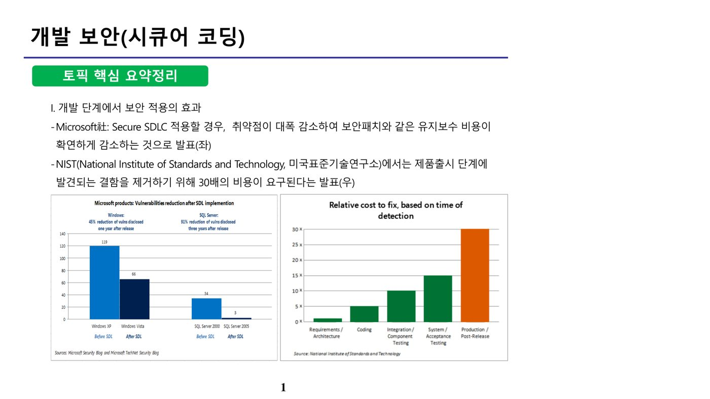

1. 개발보안 개요와 방법론 (원본 p.1-4)
개발 단계에서 보안을 적용하면 유지보수 비용을 크게 줄일 수 있다. Microsoft社가 Secure SDLC를 적용한 결과 Windows(45%), SQL Server(91%)의 취약점 공개 건수가 대폭 감소했으며, 보안패치 등 유지보수 비용도 확연히 줄어든 것으로 발표되었다. 또한 NIST(National Institute of Standards and Technology)에 따르면, 결함을 제품 출시 이후 단계에서 발견해 수정할 경우 요구사항·아키텍처 단계에서 수정하는 것보다 약 30배의 비용이 요구된다.

가. 소프트웨어 개발보안 방법론 — 개발 단계별 보안 활동
| 단계 | 주요 보안 활동 |
|---|---|
| 요구사항분석 | 요구사항 중 보안항목 식별, 요구사항 명세서 작성 |
| 설계 | 위험원 도출을 위한 위험모델링, 보안설계 검토 및 보안설계서 작성, 보안 통제 수립 |
| 구현 | 표준 코딩 정의서 및 SW개발보안 가이드를 준수해 개발, 소스코드 보안약점 진단 및 개선 |
| 테스트 | 모의침투 테스트 또는 동적분석을 통한 보안취약점 진단 및 개선 |
| 유지보수 | 지속적인 개선, 보안패치 |
나. 프로젝트 참여자별 역할
| 역할 | 주요 책임 |
|---|---|
| 프로젝트 관리자(Project Manager) | 응용프로그램 보안전략 공지, 조직 상태 모니터링, 프로젝트 일정 및 응용프로그램 보안영향 이해시킴 |
| 요구사항 분석가(Requirement Specifier) | 보안관련 비즈니스 요구사항 상세 설명 역량 보유, 구조 정의·자원 보안요구사항 결정, 유즈케이스 보안고려사항 기반 오용사례 정의 |
| 아키텍트(Architect) | 보안기술 문제 이해, 시스템이 사용하는 모든 리소스 상세 정의 |
| 설계자(Designer) | 특정 기술의 보안요구사항 만족 여부 확인, 수정에 따른 위험 최소화 로드맵 제공, 통합 시 위험 이해 및 식별된 보안위협 대응 |
| 구현개발자(Implementer) | 시큐어 코딩을 준수하여 개발·문서화 |
| 테스트 분석가(Test Analyst) | 요구사항과 구현결과를 반복적으로 확인 |
| 보안감사자(Security Auditor) | 프로젝트 전체 단계에서 보안 요구사항 및 이슈 확인 |
2. 분석·설계 단계의 보안 요구 항목 (원본 p.4-11)
「소프트웨어 개발 보안 가이드」는 분석·설계 단계의 보안 요구 항목을 입력데이터 검증 및 표현(10), 보안기능(8), 에러처리(1), 세션통제(1)의 4개 유형(항목 수는 세부 요구항목 개수)으로 분류한다. 이는 구현 단계의 보안약점 7개 유형(입력데이터 검증 및 표현·보안기능·시간 및 상태·에러처리·코드 오류·캡슐화·API 오용)과 대응 관계를 가진다.
가. 입력데이터 검증 및 표현 — 세부 요구 항목
| 유형 | 설명 | 비고 |
|---|---|---|
| DBMS 조회 및 결과 검증 | DBMS 조회 질의문 생성 시 사용되는 입력값과 조회 결과에 대한 검증(필터링 등) 및 유효하지 않은 값의 처리방법 설계 | 입·출력값 검증 |
| XML 조회 및 결과 검증 | XML 조회 질의문(Xpath, Xquery 등) 생성 시 입력값과 조회결과에 대한 검증방법 설계 | |
| 디렉터리 서비스 조회 및 결과 검증 | 디렉터리 서비스 조회(LDAP 등) 시 사용되는 입력값과 결과에 대한 검증방법 설계 | |
| 시스템 자원 접근 및 명령어 수행 입력값 검증 | 시스템 자원 접근·명령어 수행에 사용되는 입력값의 유효성 검증 및 처리방법 설계 | |
| 웹 서비스 요청 및 결과 검증 | 웹 서비스(게시판 등) 요청·응답결과에 대한 검증방법과 부적절한 데이터 처리방법 설계 | |
| 웹 기반 중요기능 수행 요청 유효성 검증 | 사용자 권한확인이 필요한 중요기능(결제 등) 요청의 유효성 검증 및 처리방법 설계 | 입·출력값 검증 |
| HTTP 프로토콜 유효성 검증 | 비정상 HTTP 헤더·자동연결 URL 링크 등에 대한 유효성 검증 및 처리방법 설계 | |
| 허용된 범위 내 메모리 접근 | 허용된 메모리 버퍼 범위 내에서만 저장·읽기가 수행되어 버퍼오버플로우가 발생하지 않도록 처리방법 설계 | |
| 보안기능 동작에 사용되는 입력값 검증 | 보안기능(인증·인가·권한부여 등) 동작에 사용되는 입력값·수행결과에 대한 처리방법 설계 | |
| 업로드·다운로드 파일 검증 | 업로드·다운로드 파일의 무결성·실행권한 등에 대한 유효성 검사 방법 설계 및 실패 시 대응방안 | 파일관리 |
나. 보안기능 — 세부 요구 항목
| 유형 | 설명 | 비고 |
|---|---|---|
| 인증 대상 및 방식 | 중요정보·기능과 인증방식을 정의하고, 인증 기능이 우회되지 않도록 설계 | 인증관리 |
| 인증 수행 제한 | 인증 반복시도 제한 및 인증실패 등에 대한 인증제한 기능 설계 | |
| 비밀번호 관리 | 안전한 비밀번호 조합규칙, 안전한 저장·재설정·변경 정책, 패스워드 관리 규칙(주기적 변경 등) 설계 | |
| 중요자원 접근통제 | 중요자원을 정의하고 접근을 통제하는 신뢰할 수 있는 방법(권한관리 포함) 및 실패 시 대응방안 설계 | 권한관리 |
| 암호키 관리 | 암호키 생성·분배·접근·파기 등 생명주기를 안전하게 관리하는 방법 설계 | 암호화 |
| 암호연산 | 국제표준·검증필 프로토콜의 안전한 암호 알고리즘을 선정하여 충분한 키 길이·솔트·난수값 기반 연산 설계 | |
| 중요정보 저장 | 중요정보(비밀번호, 개인정보 등) 저장 시 안전한 저장·관리 방법 설계 | 중요정보 처리 |
| 중요정보 전송 | 중요정보 전송 시 안전한 전송방법 설계 |
다. 에러처리 및 세션통제
에러처리는 오류메시지에 중요정보(개인정보·시스템정보 등)가 포함되어 출력되거나 오류가 부적절하게 처리되어 의도치 않은 상황이 발생하지 않도록 하는 안전한 예외처리 설계를 요구한다. 세션통제는 다른 세션 간 데이터 공유 금지, 세션 ID 노출 금지, (재)로그인 시 세션 ID 변경, 세션 종료(비활성화·유효기간) 처리 등 세션을 안전하게 관리하는 방안 설계를 요구한다.
3. 구현 단계의 소프트웨어 보안 약점 (원본 p.12-21)
구현 단계의 소프트웨어 보안 약점은 7개 유형(입력데이터 검증 및 표현·보안기능·시간 및 상태·에러처리·코드 오류·캡슐화·API 오용)으로 분류된다.
가. 입력데이터 검증 및 표현 관련 보안약점
| 보안 약점 | 설명 |
|---|---|
| SQL 삽입 | 검증되지 않은 외부 입력값이 SQL 쿼리문 생성에 사용되어 악의적인 쿼리가 실행될 수 있는 보안약점 |
| 경로 조작 및 자원 삽입 | 검증되지 않은 외부 입력값이 시스템 자원 접근경로·자원제어에 사용되어 공격자가 조작할 수 있는 보안약점 |
| 크로스사이트 스크립트 | 검증되지 않은 외부 입력값에 의해 사용자 브라우저에서 악의적인 스크립트가 실행될 수 있는 보안약점 |
| 운영체제 명령어 삽입 | 검증되지 않은 외부 입력값이 운영체제 명령문 생성에 사용되어 악의적인 명령어가 실행될 수 있는 보안약점 |
| 위험한 형식 파일 업로드 | 파일 확장자 등 형식 검증 없이 업로드를 허용하여 발생하는 보안약점 |
| 신뢰되지 않는 URL 주소로 자동 접속 연결 | 검증되지 않은 외부 입력값이 URL 링크 생성에 사용되어 악의적인 페이지로 연결될 수 있는 보안약점 |
| Xquery/Xpath/LDAP 삽입 | 검증되지 않은 외부 입력값이 각 질의문·명령문 생성에 사용되어 악의적인 쿼리·명령어가 실행될 수 있는 보안약점 |
| 크로스사이트 요청 위조(CSRF) | 검증되지 않은 외부 입력값에 의해 브라우저에서 악의적인 스크립트가 실행되어, 공격자가 원하는 요청이 다른 사용자(관리자 등) 권한으로 서버에 전송되는 보안약점 |
| HTTP 응답분할 | 검증되지 않은 외부 입력값이 HTTP 응답헤더에 삽입되어 악의적인 코드가 실행될 수 있는 보안약점 |
| 정수형 오버플로우 | 정수 연산 결과가 정수값 범위를 넘어서 프로그램이 예기치 않게 동작하는 보안약점 |
| 보안기능 결정에 사용되는 부적절한 입력값 | 검증되지 않은 입력값이 인증·인가·권한부여 등 보안 결정에 사용되어 보안 메커니즘 우회를 야기하는 보안약점 |
| 메모리 버퍼오버플로우 | 메모리 버퍼의 경계값을 넘어 값을 읽거나 저장해 예기치 않은 결과를 발생시키는 보안약점 |
| 포맷 스트링 삽입 | printf 등 외부 입력값으로 포맷 스트링을 제어할 수 있는 함수 사용으로 발생하는 보안약점 |
나. 보안기능 관련 보안약점
| 보안 약점 | 설명 |
|---|---|
| 적절한 인증없는 중요 기능 허용 | 적절한 인증 없이 중요정보를 열람·변경할 수 있게 하는 보안약점 |
| 부적절한 인가 | 적절한 접근제어 없이 외부 입력값을 포함한 문자열로 중요자원에 접근할 수 있는 보안약점 |
| 중요한 자원에 대한 잘못된 권한설정 | 중요자원에 적절한 접근권한을 부여하지 않아 비인가자에 의해 정보가 노출·수정되는 보안약점 |
| 취약한 암호화 알고리즘 사용 | 기밀성을 보장할 수 없는 취약한 암호화 알고리즘 사용으로 정보가 노출되는 보안약점 |
| 중요정보 평문저장·평문전송 | 중요정보를 암호화하지 않고 저장·전송하여 노출되는 보안약점 |
| 하드코드된 비밀번호·암호화 키 | 소스코드 내 하드코딩으로 유출 시 노출 우려 및 변경이 용이하지 않은 보안약점 |
| 충분하지 않은 키 길이 사용 / 적절하지 않은 난수값 사용 | 암호키 길이 부족 또는 예측 가능한 난수 사용으로 인한 보안약점 |
| 취약한 비밀번호 사용 | 비밀번호 조합규칙 미흡·길이 부족으로 노출될 수 있는 보안약점 |
| 사용자 하드디스크에 저장되는 쿠키를 통한 정보노출 | 세션 ID·사용자 권한정보 등 중요정보를 쿠키로 하드디스크에 저장해 노출되는 보안약점 |
| 주석문 안에 포함된 시스템 주요정보 | 소스코드 주석문에 인증정보 등이 포함되어 소스코드 유출 시 노출되는 보안약점 |
| 솔트 없이 일방향 해시함수 사용 | 솔트 없이 생성된 해시값을 레인보우 테이블로 원문 추적당할 수 있는 보안약점 |
| 무결성 검사없는 코드 다운로드 | 원격 코드·실행파일을 무결성 검사 없이 다운로드·실행해 악성코드가 실행될 수 있는 보안약점 |
| 반복된 인증시도 제한 기능 부재 | 인증시도 횟수를 제한하지 않아 무작위 대입 공격이 가능한 보안약점 |
| DNS lookup에 의존한 보안결정 | DNS 스푸핑 공격이 가능하므로 DNS 이름에 의존한 보안결정이 노출되는 보안약점 |
| 취약한 API 사용 | 취약하다고 알려진 함수 사용으로 예기치 않은 보안위협에 노출되는 보안약점 |
다. 시간 및 상태 / 에러처리 / 코드 오류 관련 보안약점
| 보안 약점 | 설명 |
|---|---|
| 경쟁조건: 검사시점과 사용시점(TOCTOU) | 멀티 프로세스에서 자원을 검사하는 시점과 사용하는 시점이 달라서 발생하는 보안약점 |
| 종료되지 않는 반복문 또는 재귀함수 | 종료조건 없는 제어문 사용으로 반복문·재귀함수가 무한히 반복되는 보안약점 |
| 오류메시지를 통한 정보노출 | 오류 메시지에 시스템 내부구조 등 민감정보가 노출되는 보안약점 |
| 오류상황 대응 부재 / 부적절한 예외 처리 | 오류·예외를 처리하지 않거나 부적절하게 처리하여 의도치 않은 상황이 발생하는 보안약점 |
| Null Pointer 역참조 | Null로 설정된 변수의 주소값을 참조했을 때 발생하는 보안약점 |
| 부적절한 자원 해제 / 해제된 자원 사용 | 사용된 자원을 적절히 해제하지 않아 자원 누수 등이 발생하는 보안약점 |
| 초기화되지 않은 변수 사용 | 변수를 초기화하지 않고 사용해 예기치 않은 오류가 발생하는 보안약점 |
라. 캡슐화 관련 보안약점
| 보안 약점 | 설명 |
|---|---|
| 잘못된 세션에 의한 데이터 정보 노출 | 잘못된 세션에 의해 비인가 사용자에게 중요정보가 노출되는 보안약점 |
| 제거되지 않고 남은 디버그 코드 | 디버깅용 코드를 통해 비인가 사용자에게 중요정보가 노출되는 보안약점 |
| 시스템 데이터 정보노출 | 오류메시지·스택 정보에 시스템 내부 데이터가 공개되는 보안약점 |
| Public 메소드로부터 반환된 Private 배열 | Private 배열을 Public 메소드로 반환하면 배열 레퍼런스가 외부에 공개되어 수정 가능해지는 보안약점 |
| Private 배열에 Public 데이터 할당 | Public 데이터·파라미터를 Private 배열에 저장하면 외부에서 그 배열에 접근 가능해지는 보안약점 |
4. 보안요구항목·보안약점 매핑 및 탐지 판정 (원본 p.22-36)
분석·설계 단계의 보안 요구 항목과 구현 단계의 보안약점은 서로 대응 관계를 갖는다.
| 구분 | 분석/설계 단계 보안요구항목 | 구현 단계 보안약점 |
|---|---|---|
| 입력 데이터 검증 및 표현 | DBMS 조회 및 결과 검증 | SQL 삽입 |
| XML 조회 및 결과 검증 | Xquery 삽입, Xpath 삽입 | |
| 디렉터리 서비스 조회 및 결과 검증 | LDAP 삽입 | |
| 시스템 자원 접근 및 명령어 수행 입력값 검증 | 경로조작 및 자원삽입, 운영체제 명령어 삽입 | |
| 웹 서비스 요청 및 결과 검증 | 크로스사이트 스크립트 | |
| 웹 기반 중요기능 수행 요청 유효성 검증 | 크로스사이트 요청 위조 | |
| 입력 데이터 검증 및 표현 | HTTP 프로토콜 유효성 검증 | 신뢰되지 않은 URL 자동접속 연결, HTTP 응답분할 |
| 허용된 범위내 메모리 접근 | 포맷스트링 삽입, 메모리 버퍼 오버플로우 | |
| 보안기능 동작에 사용되는 입력값 검증 | 보안기능 결정에 사용되는 부적절한 입력값, 정수형 오버플로우, Null Pointer 역참조 | |
| 업로드, 다운로드 파일 검증 | 위험한 형식 파일 업로드, 무결성 검사 없는 코드 다운로드 | |
| 보안기능 | 인증대상 및 방식 | 적절한 인증 없는 중요기능 허용, DNS Lookup에 의존한 보안결정 |
| 인증수행 제한 | 반복된 인증시도 제한기능 부재 | |
| 비밀번호 관리 | 하드코드된 비밀번호, 취약한 비밀번호 허용 | |
| 중요자원 접근통제 | 부적절한 인가, 중요한 자원에 대한 잘못된 권한 설정 | |
| 암호키 관리 | 하드코드된 암호화 키, 주석문 안에 포함된 시스템 주요 정보 | |
| 암호연산 | 취약한 암호화 알고리즘 사용, 충분하지 않은 키 길이, 적절하지 않은 난수값, 솔트없이 일방향 해시함수 사용 | |
| 보안기능 | 중요정보 저장 / 중요정보전송 | 중요정보 평문저장·쿠키정보노출 / 중요정보 평문전송 |
| 에러처리 | 예외처리 | 오류메시지를 통한 정보노출, 시스템 데이터 정보 노출 |
| 세션통제 | 세션통제 | 잘못된 세션에 의한 데이터 정보노출 |
가. 안전한 코딩 기법 사례
악성 스크립트 파일 업로드 공격을 예방하려면 업로드 파일의 타입·크기를 제한하고 업로드 디렉토리를 웹 서버 도큐먼트 외부에 두어야 하며(내부에 두는 것은 오답), 화이트리스트 방식으로 허용된 확장자만(대소문자 구분 없이) 업로드를 허용하고, 공격자의 직접 접근을 차단하며 실행 속성을 제거해야 한다. PreparedStatement 클래스 사용은 SQL Injection 방지 기법이며 파일 업로드 방어와는 무관하다.
<, >, &, ", ', / 등의 특수문자를 필터링하는 코드는 크로스사이트 스크립트(XSS) 방지 대책이다. 외부 입력을 자원 식별자로 사용할 때 검증하는 것, HTML 게시판에서 허용 태그 화이트리스트를 적용하는 것, 자동연결 URL 검증은 모두 '입력데이터 검증 및 표현' 유형의 대책이지만, 쿠키의 만료시간·세션ID 미포함 설정은 '보안기능' 유형의 대책으로 분류된다.
환경변수(getenv)로 받은 포트 값을 검증 없이 그대로 소켓 연결에 사용하는 C 코드는 경로 조작 및 자원 삽입 보안약점에 해당한다. '입력데이터 검증 및 표현' 유형에 속하는 보안약점은 경로 조작 및 자원 삽입·Xpath 삽입·정수형 오버플로우 등이며, 부적절한 인가는 '보안기능' 유형으로 분류되어 이 유형에 속하지 않는다.
나. 시큐어코딩 점검 시 탐지 판정
| 판정 | 의미 |
|---|---|
| True Positive | 보안약점이 내포된 Bad 코드에서 취약한 함수의 위치를 정확하게 탐지한 경우 |
| False Negative(미탐) | 보안약점이 내포된 Bad 코드에서 취약한 함수의 위치를 탐지하지 못한 경우 |
| False Positive(오탐) | 보안약점이 존재하지 않는 Good 코드에서 보안약점 위치를 잘못 탐지한 경우 |
| True Negative | 보안약점이 존재하지 않는 Good 코드에서 보안약점 위치를 탐지하지 않은(정확히 판정한) 경우 |
"Good 코드에서 보안약점의 위치를 탐지하지 못한 경우"는 오탐(False Positive)이 아니라 정확한 판정인 True Negative에 해당한다. False Positive에 대한 관리가 미흡하면 실제로는 안전한 Good 코드를 계속 재분석하게 되어 점검 효율이 떨어진다.
📚 전체 기출·예상문제 (6문항) — 원문 수록
본 강좌 원본 PDF에 수록된 기출·예상문제를 문항별로 재구성했습니다. 원본에는 한 페이지에 서로 다른 문제가 뒤섞여 추출되어 있던 부분을 분리했으며, 문항별 정답은 원문의 O/X 해설과 대조하여 검증했습니다.